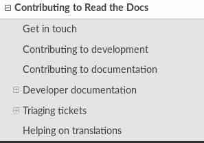
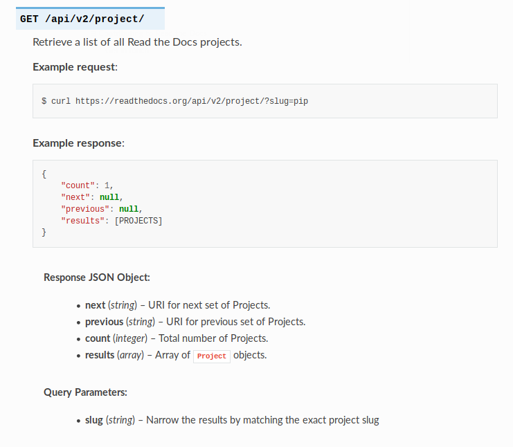
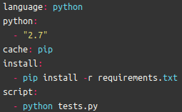

Syllabus
- Construire un "Readthedocs" pour l'installation ainsi que les règles/aides pour la contribution
- Mise en place d'un Travis
Data-logger
- Construire un "Readthedocs" pour faciliter l'utilisation de l'API
- + les même points que pour le syllabus
Readthedocs
- Il utilise sphinx :
pip install sphinx
- Tout se passe dans un dossier à la racine
"docs/"
- La doc s'écrie en utilisant des
"*.rst"
- La page html se crée avec
"make html" et se place dans "_build/html"
- socrates.io permet d'avoir une compilateur automatique en ligne de reStructuredText ( /!\ pas de thème)
Syllabus - Readthedocs
- Il y a déja une doc pour l'installation présente sur le projet
- Ajout d'un "how to contribute" ( exemple )

- Pour savoir quelle est la structure general du syllabus et comment y contribuer, voir les slides du projet sylla
Data-logger - Readthedocs
- Ajout de la doc pour l'API ( exemple )

Travis
- Le but de Travis est de faire tourner le programme dans une VM à l'aide d'un
".travis.yml"
- Il faut lui dire quelles languages sont utilisés
- Importer les dépendences
- Importer les autres repos git
- Lancer la suite de test

- un repo qui utilise des tests python (fait par Nicolas et Bastien)
En concret
- Fork les projets pour avoir les droits administrateur
- 1 et 2 pour ceux qui font Travis et doc pour le sylla
- 1 et 2 pour ceux qui font Travis et doc pour le data-logger
- Permettre à Travis ou Readthedoc d'avoir accès à ces repos
- Cloner seulement les VMs sur votre machine
- Changer les sources de pull et push pour git dans la VM
En concret - doc sylla
- Une fois la VM installer vous pouvez vous connecter en ssh avec
vagrant ssh
- Le dossier se trouve dans
"/vagrant/syllabus/interactive-syllabus"
- Vous avez un mount du dossier en local utiliser votre editeur de text et navigateur
- Attaquer la doc avec : comment crée des pages/exos, comment contribuer a la doc, comment installer la VM / crée son sylla, ...
En concret - doc data-logger
- Une fois la VM installer vous pouvez vous connecter en ssh avec
vagrant ssh
- Vous pouvez monter un dossier comme expliquer dans le README
- Le dossier se trouve dans
"/var/www/data-logger"
- Vous pouvez utiliser le mount du dossier en local à la souche du repo pour utiliser votre editeur de text et navigateur
- Attaquer la doc avec : une API, comment contribuer au projet/à la doc, installer la VM, ...
En concret - Travis
- Pour le sylla c'est mieux de partir du repo de la VM
- Pour le data-logger ce n'est pas obligé
- Si vous ne partez pas de la VM alors il faudra la reconstruire dans le
".travis.yml"(ça peut être interressant)
- Pour le sylla : des tests automatique pour les exos, tester si le format est conforme à la doc, ...
- Pour data-logger : test de l'API,...(il va falloir attendre un petit peu que le projet se mette en route)